The plate, politics, and norms behind the all-American breakfast. How marketing tactics have affected not only what we eat and when we eat it, but also our beauty standards, the politics of war, gender roles, and our prioritization of productivity.
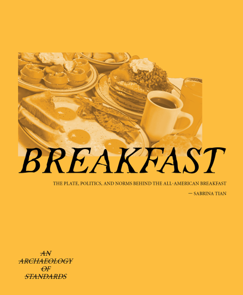
The all-American breakfast is not a natural cultural artifact — it is a constructed one, shaped by marketing, wartime policy, corporate lobbying, and shifting gender norms. This publication traces those origins, arguing that what we eat in the morning has never been simply about nutrition.
From the cereal industry's 20th-century health campaigns to egg boards and wartime rationing, the history of breakfast is a history of power: over bodies, over time, and over what counts as productive.
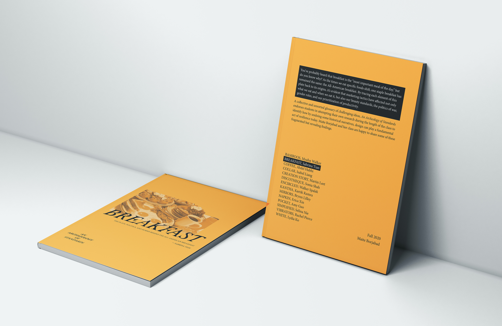
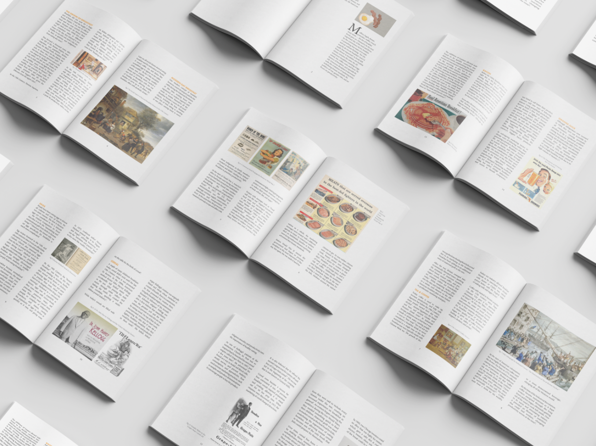
The research traced how breakfast marketing campaigns intersected with some of the most significant cultural forces of the 20th century — not as background noise, but as active shapers of public belief and behavior.
Cereal and diet product marketing linked morning meals to body ideals, making breakfast a site of self-improvement and discipline.
Wartime rationing and nutritional policy reshaped what a "patriotic" breakfast looked like, with lasting effects on American eating habits.
Breakfast advertising placed women as preparers and men as consumers, reinforcing domestic labor norms through food.
The "most important meal" framing tied eating to performance and output — making breakfast a moral obligation rather than a personal choice.
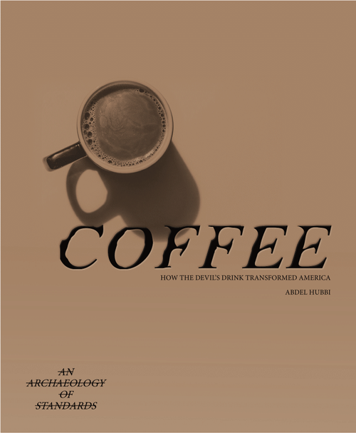
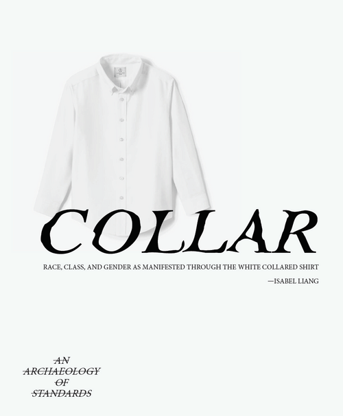
The publication was produced as part of a class-published series in Contemporary Theories in Design. The collaborative format — cover design, layout, illustration, and writing developed as distinct roles — mirrors the kind of coordinated production that shapes the very media histories the book examines.
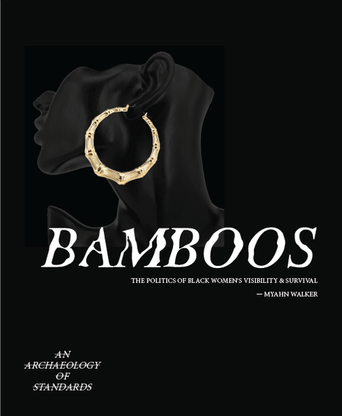
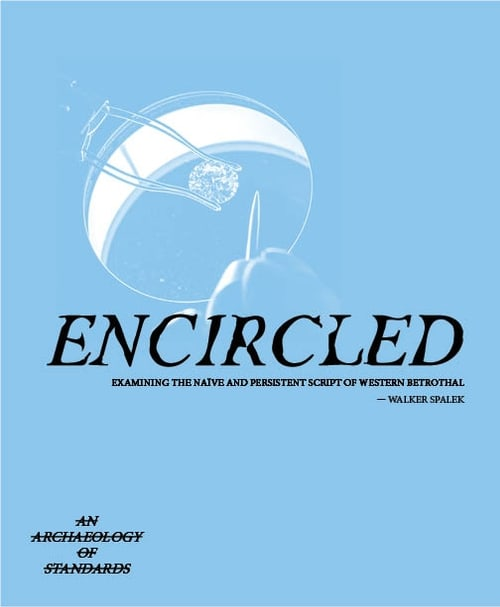
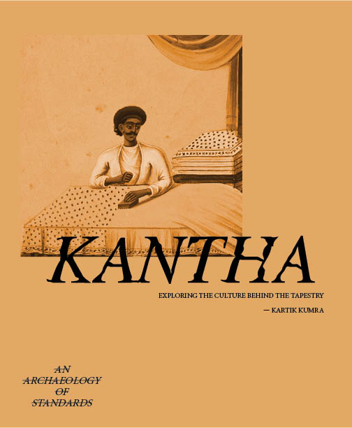
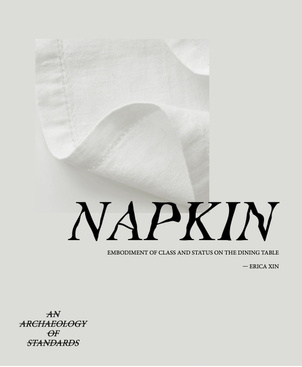
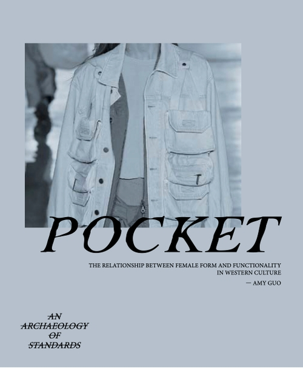
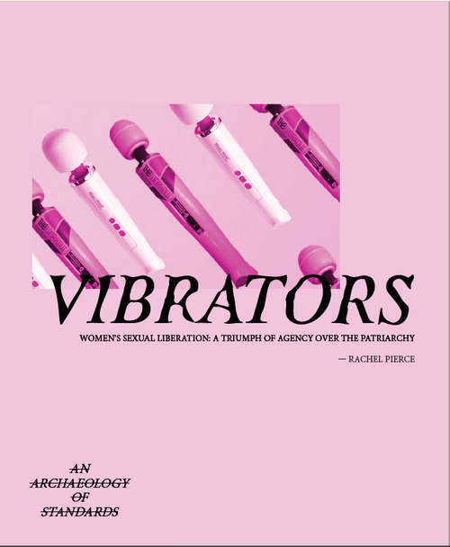
Illustration by Lydia Ko. Cover by Walker Spalek & Kartik Kumra.
Politics of Breakfast demonstrates how contemporary theories in design can reframe everyday objects and rituals as political artifacts. The breakfast table becomes a site of analysis rather than comfort — a place where ideology is consumed alongside food, invisibly, every morning.